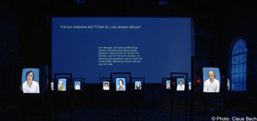

|

"bUrNiNgBlUeSoUl", 2005. Sound & Video Installation While listening to music, we are entirely on our own, entirely private. But what if we are observed while doing it, placed on display? This installation focuses on just this intersection between private and public. Constantly encircled by the media and market, the private is an endangered category in our society that is threatened with extinction. Interactively crossing between media, this work gives contemporary expression to old "dreams of love." With the friendly support of ZKM Karlsruhe; Agenos GmbH Made possible by a special grant of the Federal Commissioner for Cultural and Media Affairs -PËlerinages- Kunstfest, E-Werk, Straflenbahndepot, Weimar, Summer 2005. Jan Brueggemeier - "bUrNiNgBlUeSoUl" Audio Sequence, .mp3 format Close Window All content copyright 2006 Naomi Tereza Salmon - all rights reserved |